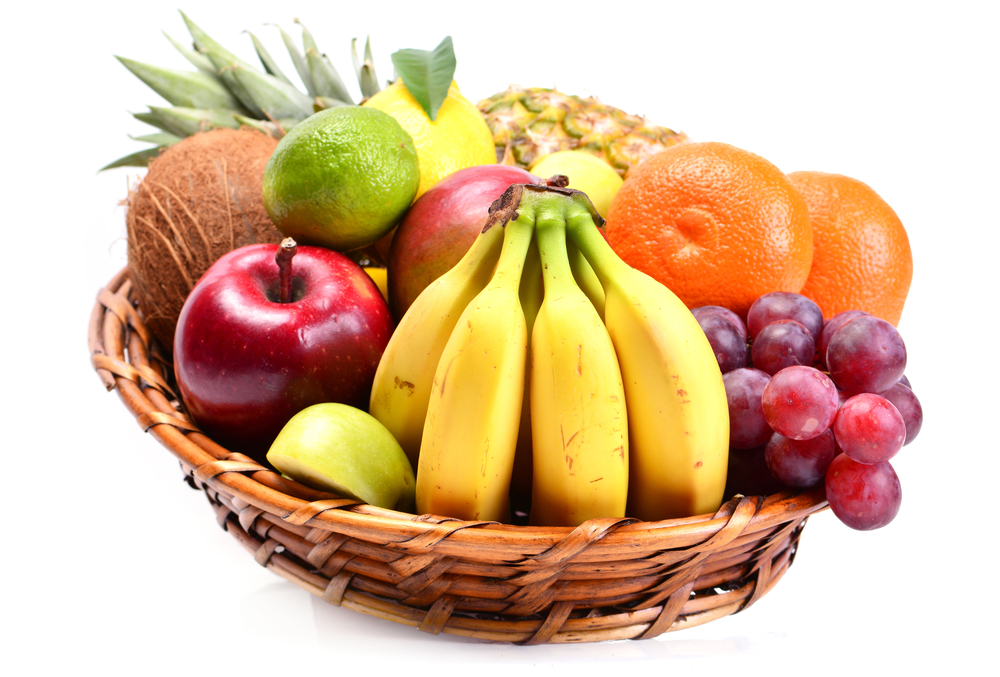

Buah-buahan  |
|
Pengertian BuahBuah adalah hasil reproduksi antara putik dan serbuk sari pada tumbuhan.[1] Buah termasuk organ pada tumbuhan berbunga yang merupakan perkembangan lanjutan dari bakal buah (ovarium). Buah biasanya membungkus dan melindungi biji. Aneka rupa dan bentuk buah tidak terlepas kaitannya dengan fungsi utama buah, yakni sebagai pemencar biji tumbuhan. Berikut ini manfaat-manfaat buah:
Agar manfaat buah bisa dirasakan secara maksimal, baik Badan Kesehatan Dunia (WHO) maupun Kementerian Kesehatan RI menganjurkan Anda untuk mengonsumsi sekitar 5 porsi buah dan sayur setiap harinya. |
Buah - buahanBuah Vitamin C
Buah Vitamin A
|
|
"BUAH-BUAHAN memiliki kandungan gizi, vitamin dan mineral yang sangat baik untuk tubuh." |
|